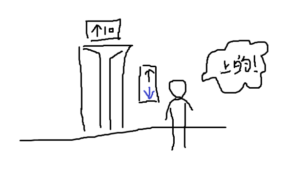

Every time I take the elevator, I feel confused. There is an issue I’ve noticed for a long time.
It’s not a big deal, but currently, the elevator in a certain building has this situation. When the elevator descends to the 1st floor, the floor display screen shows a downward arrow ↓. When the elevator reaches the 1st floor and the door opens, the arrow still points downward. At this point, many people assume that the elevator is about to go down to the basement.
This assumption is understandable because there’s another design flaw in the elevator. If someone is waiting for the elevator to go from the 10th floor to the 1st floor, and at the same time someone is riding the elevator from the 1st floor to the 20th floor, the elevator will stop and open the door on the 10th floor. Regardless of whether the person on the 10th floor gets on the elevator, it will continue to the 20th floor. The door opens on the 10th floor simply because the person who wants to go to the 1st floor pressed the elevator button.
Due to this upward movement behavior of the elevator, it’s easy to infer that the elevator might behave similarly when going down. Seeing the arrow pointing down on the 1st floor, people might think the elevator is going to the basement, and because they pressed the button or someone just exited the elevator on this floor, the door opens. However, the truth is, the arrow merely retains the previous state of the elevator’s movement (downward), and whether it goes up or down next depends on which floor the first person to enter the elevator presses.
Not all elevators are like this. The correct approach should be that when the elevator has no tasks, the display screen should not show any arrows or display something like (–).
When a task is completed (elevator operation ends), the task flag should be reset to its initial state (arrow cleared). This logic is very common in programming. Whether it’s UI or memory, users are not trustworthy, and neither is GC; manual recycling is the way to go. I encountered a pitfall today :(
The pitfall is simple and can be expressed in one sentence: executing an SQL statement in a loop without closing the Statement object.
Although the pitfall is simple, it affected normal business operations in the production environment. The default limit for DB2 is 1400- statements, after which errors occur. Be careful during development and pay attention to large data scenarios during self-testing. Hopefully, such errors won’t happen again in the future!